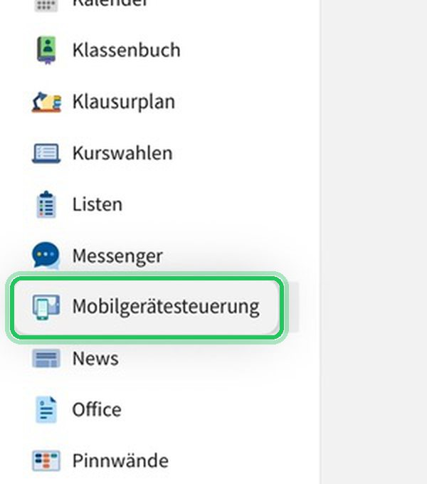
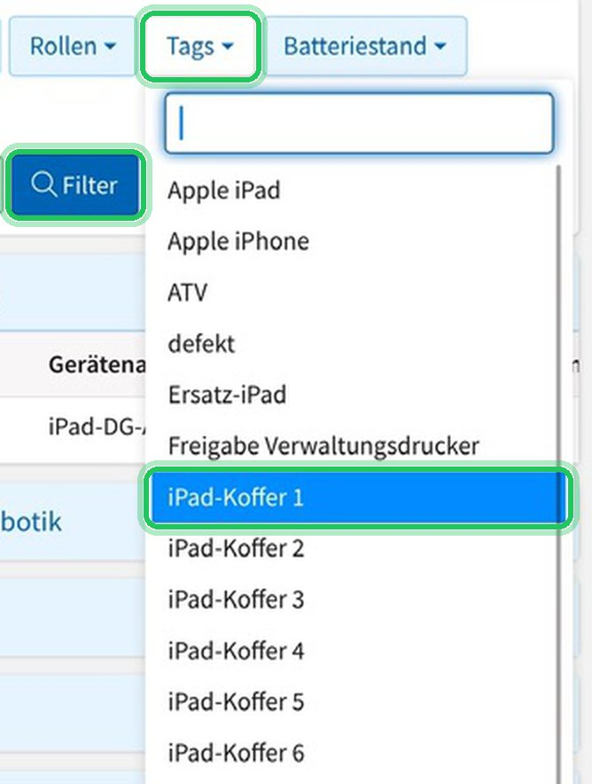
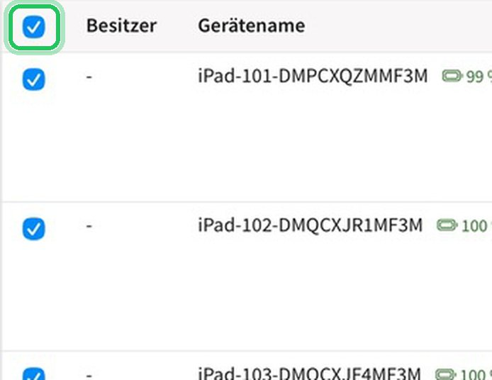
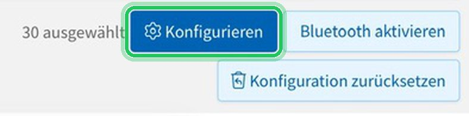
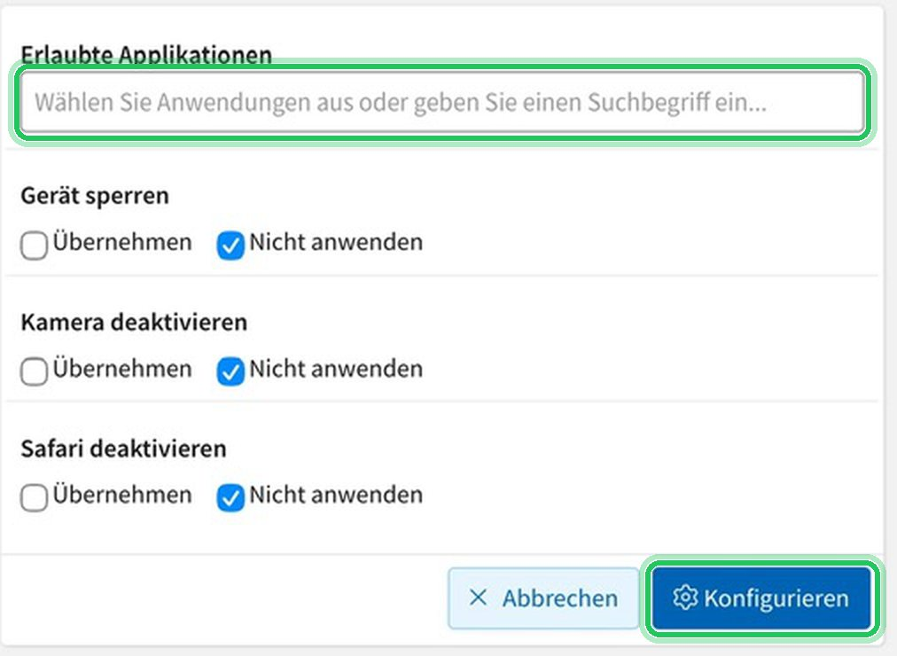
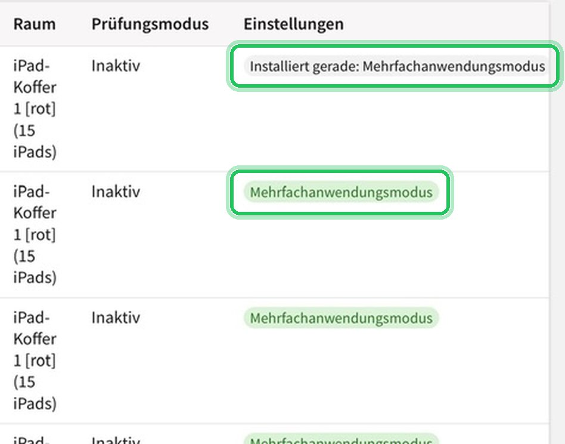
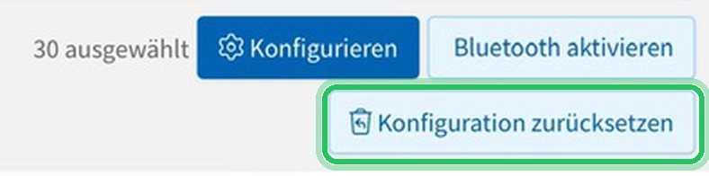

Anleitung · IServ
iPads steuern

Öffnen
In IServ die Mobilgerätesteuerung öffnen – über die Modulliste oder direkt über die Kachel im Portal.

Koffer auswählen
Auf „Tags“ tippen, den Koffer wählen und mit „Filter“ bestätigen.

Alle markieren
Den Haken oben links in der Tabelle setzen – so sind alle iPads des Koffers ausgewählt.

Konfigurieren
Ganz nach unten scrollen und auf „Konfigurieren“ tippen.

Einschränken
- aBei „Erlaubte Applikationen“ die Apps wählen, die genutzt werden dürfen.
- bBei Bedarf Gerät, Kamera oder Safari sperren: „Übernehmen“ anhaken.
- cAuf „Konfigurieren“ tippen.

Prüfen
Unter „Einstellungen“ steht erst „Installiert gerade …“, kurz darauf grün der Modus. Dann sind die iPads eingeschränkt.

Nicht vergessen!Die Einschränkungen bleiben bestehen, bis sie zurückgesetzt werden.
Nach dem Unterricht
Wieder alle iPads markieren (Schritte 2–3) und „Konfiguration zurücksetzen“ tippen. Danach steht dort „Keine Einstellungen“.